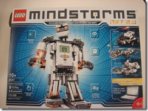
For some time now, I've coveted the Lego Mindstorms NXT 2.0 Robotics kit. It's a great teaching toy tool and not only can you program it with the excellent and intuitive Lego IDE (from LabView), but you can also use Microsoft Robotics Studio and .NET.
With that justification, just before Christmas I ordered one from the local online Lego Specialist, BrickNet and immediately got an email from them saying they'd shipped it. As soon as I got back to work after New Year, it was waiting on my desk. Awesome!
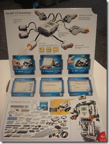
There are over 600 pieces in the box ranging from the main brick (the NXT Controller) that's the brains of any robot you build, the motors cables and sensors that are the brawn and nervous system:
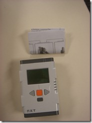 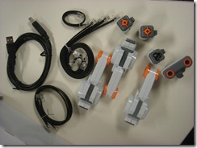
The traditional Lego Technics bits and the test pad are accompanied by a CDROM and instruction manual
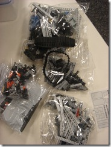 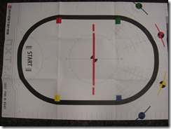
Of course, when they arrive, they're all packed in the box like this:
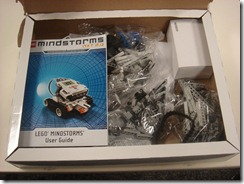
Having built Technics kits before, I know how important it is to be able to find that tiny piece without which the whole thing just won't work, so the first thing I did was go down to the local supermarket and buy a heap of plastic sealable containers in various sizes and spend the next 90 minutes or so sorting bits into boxes. Yes, I know there's a name for my condition and thanks, the therapy is proceeding apace. In the end, it looked like this:
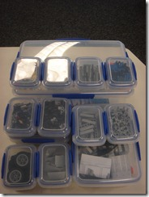
So the question was, of course, what to build first. Some of you may have caught the news that Catherine Eibner was recently awarded the Microsoft Diversity Campion Women Build Award for 2009. Of course, the trophy she got was all lego (as were the dozen or so "mini-me" lego people that went along with it.
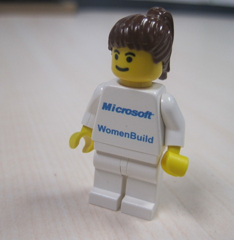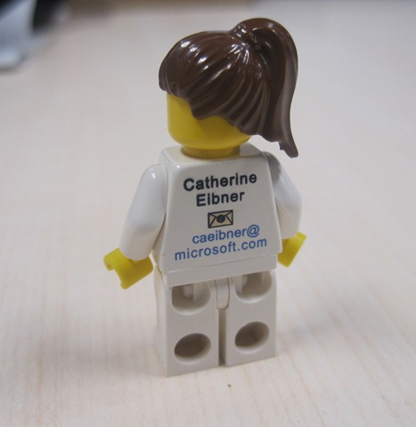
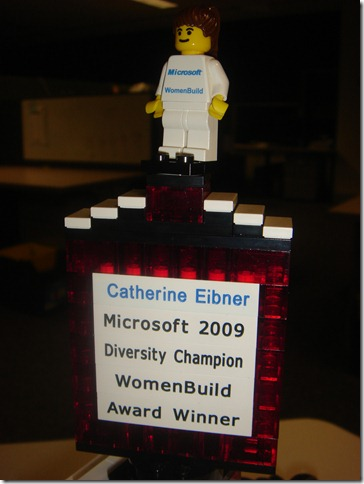
Sadly, not everyone in the subsidiary reads Catherine's blog, and so they might not have found out about this important award being presented to someone so close to them.
What better way to solve that problem than to have a robot take them the news. Enter TrophyBot:
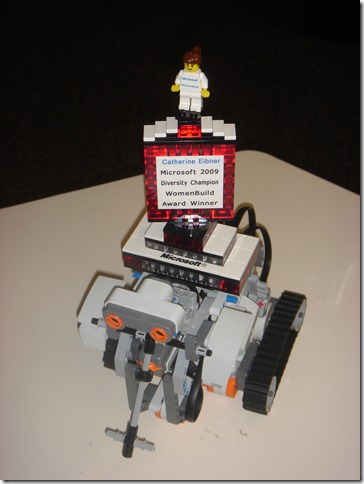
TrophyBot is an extension of the first tutorial robot that ships with the Mindstorms kit. The driving base consists of 2 motors to propel the tracks and the NXT controller. A third motor is built in to the centre of the body to provide for later upgrades.
Building the base is pretty straight forward, the detailed step-by-step instructions are available in the printed manual or as part of the NXT software that comes in the kit.

In addition to the driving base (shown in the top-left of the screenshot above), I added a platform for the trophy to stand on, a bump sensor to work out when the robot hits things and an ultrasonic sensor to detect things that are further away.
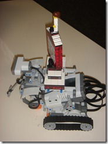 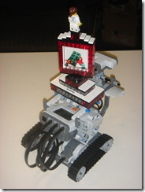 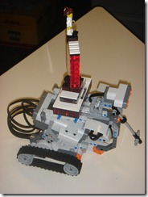
In a subsequent post I'll show how easy it is to program TrophyBot, to respond to events and to interact with the environment.